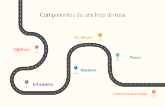

La inteligencia artificial (IA) se refiere a la simulación de procesos de inteligencia humana por parte de máquinas, especialmente sistemas informáticos. La IA ha revolucionado diversas industrias, desde la salud hasta el entretenimiento.
Ciberseguridad
La ciberseguridad es la práctica de proteger sistemas, redes y programas de ataques digitales. Estos ataques suelen tener como objetivo acceder, alterar o destruir información sensible, extorsionar a los usuarios o interrumpir procesos normales.
Computación en la Nube

La computación en la nube permite el acceso remoto a software, almacenamiento y otros servicios informáticos a través de Internet, sin necesidad de tener un servidor físico en las instalaciones del usuario.
resumen
En colombia se implemento un banco virtual sucesor de bancolombia para facilitar a los usuairos para ahorrar tiempo y dinero a la hora se hacer sus diligencias con asistentes vituales o chatbost que pueden las inquetudes que tiene los diferentes usuarios.
tambien con la computacion en la nube que los datos estan seguros y resguardados para poder mejorar la experiencia y confidencialidad del mismo.
Resumen que es la Tecnologia
La tecnología es el conjunto de conocimientos, herramientas, técnicas y procesos utilizados para crear soluciones que faciliten tareas, resuelvan problemas y mejoren la calidad de vida. Implica la aplicación práctica de la ciencia en diversas áreas, desde la fabricación de productos hasta el desarrollo de software y la innovación en comunicaciones, energía, salud, entre otros campos
Resumen algoritmo de busqueda
los algoritmos de busqueda son muy importante para el uso diaro en diferentes aplicativos o paginas ya sea para trabajo o para buscar un lugar o sitio de interes mostanro el tiempo y una ruta para poder llegar a ese destino.
cada algoritmo ofrece ventajas segun la organizacion de los datos y al tipo de dato que se enfrenta y a lo que se requiera utilizar en el momento de una busqueda esto es muy importante para optimizar el rendimiento de los programas y resober problemas mas eficaz.s